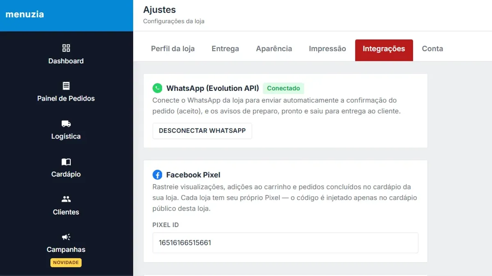

Como configurar o WhatsApp Business para delivery

O WhatsApp é o balcão do seu delivery. Bem configurado, ele manda o cliente direto para o cardápio e para de ocupar o atendente com "qual o cardápio?" e "quanto tempo demora?". Siga os passos.
Passo 1 — Perfil comercial completo
No WhatsApp Business, vá em Configurações › Ferramentas comerciais › Perfil comercial e preencha:
- Foto: logo legível em tamanho pequeno.
- Categoria: Restaurante (ou a mais próxima).
- Horário de funcionamento exato.
- Endereço (ou área de atendimento).
- Site: o link do seu cardápio digital. Esse é o campo mais importante.
Passo 2 — Mensagem de saudação com o link do cardápio
Em Ferramentas comerciais › Mensagem de saudação, ative e escreva algo direto:
"Olá! 🍔 Faça seu pedido pelo nosso cardápio, é rapidinho: [seu link]. Lá você vê fotos, preços, taxa de entrega e já paga por Pix. Qualquer dúvida, é só chamar aqui!"
Isso transforma uma conversa de 10 mensagens num pedido de 1 minuto — e o pedido já chega organizado na cozinha.
Passo 3 — Mensagem de ausência
Configure para fora do horário: "Estamos fechados agora. Abrimos hoje às 18h — deixe o link salvo: [seu link]". Cliente que chama fora de hora não se perde.
Passo 4 — Respostas rápidas
Em Respostas rápidas, crie atalhos com "/":
- /cardapio — link do cardápio.
- /pix — chave Pix e nome do recebedor.
- /tempo — tempo médio de entrega.
- /taxa — como funciona a taxa de entrega por bairro.
Passo 5 — Etiquetas para organizar clientes
Use etiquetas como Novo cliente, Pedido pendente, Pago e Cliente VIP. Elas ajudam a não perder conversa na correria e a separar quem merece um cupom especial.
Passo 6 — Avisos automáticos do pedido
O maior tempo gasto no WhatsApp é com "meu pedido já saiu?". A solução é avisar antes de o cliente perguntar. No Menuzia, em Ajustes › Integrações, você conecta o WhatsApp da loja e o sistema envia sozinho a confirmação do pedido e os avisos de preparo, pronto e saiu para entrega. Tem também um robô de atendimento 24h que responde dúvidas e manda o link do cardápio.
Passo 7 — Use a base para vender de novo
Todo cliente que pediu é um contato que você pode reativar em dia parado. Veja como fazer campanha de WhatsApp para delivery sem virar spam.
Perguntas frequentes
WhatsApp Business é pago?
O aplicativo WhatsApp Business é gratuito. Integrações e envios automáticos via sistemas de terceiros podem ter custo conforme a ferramenta.
Como colocar o link do cardápio no WhatsApp?
Coloque o link no campo Site do perfil comercial e na mensagem de saudação. Assim todo cliente que chamar recebe o cardápio na primeira mensagem.
Dá para avisar o cliente automaticamente quando o pedido sai?
Sim. Com o WhatsApp conectado ao Menuzia, o cliente recebe automaticamente a confirmação e os avisos de preparo, pronto e saiu para entrega.
Pare de pagar comissão por pedido
Tenha seu cardápio digital próprio por R$67/mês fixo. Nós configuramos pra você e damos todo o suporte técnico.
Criar Meu Cardápio Agora →